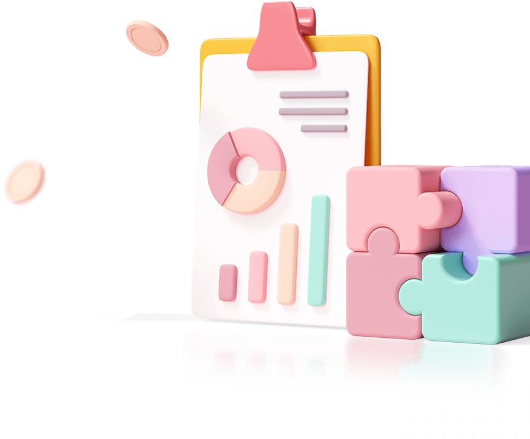
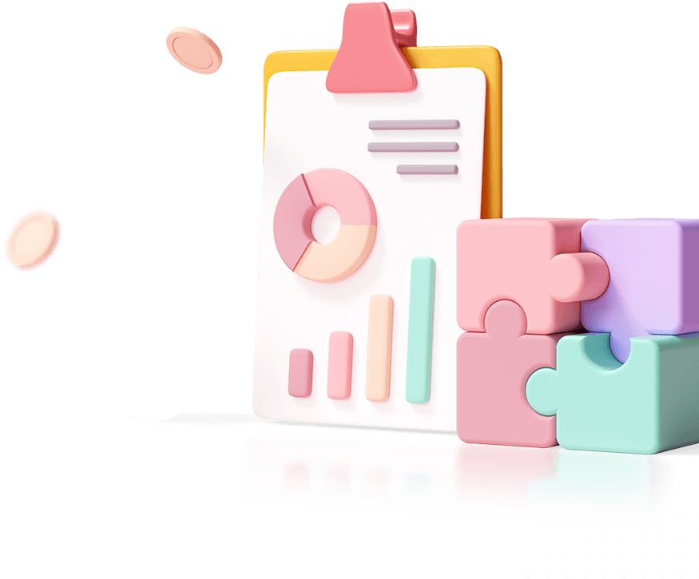
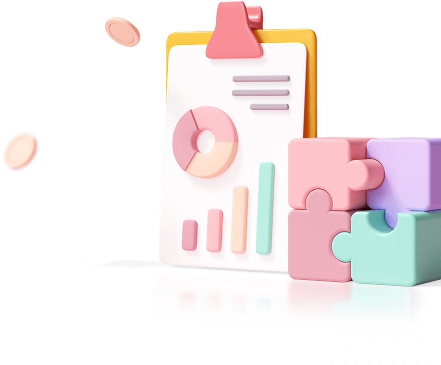

Real-time data score analysis
Analytics solutions for new business.
Data analytics is the set of qualitative and quantitative approach to derive valuable insights of data.

 

Real-time data score analysis
Data analytics is the set of qualitative and quantitative approach to derive valuable insights of data.

Data analytics and business model solution
Real-time segmentation
This model is idea-driven as it involves daily engagement activities with clients.
Exploratory data analysis
This model is idea-driven as it involves daily engagement activities with clients.
Business intelligence
This model is idea-driven as it involves daily engagement activities with clients.
Prescriptive analytics
This model is idea-driven as it involves daily engagement activities with clients.

World-class 30,000+ companies are already work with crafto.
Data analysis also provides researchers with a selection of different tools, such as descriptive statistics, inferential analysis and quantitative analysis.
Personalization of products and services.
Improving quality of products and services.
Increase the efficiency of the work.
Data analysis also provides researchers with a selection of different tools, such as descriptive statistics.

Data analysis also provides researchers with a selection of different tools, such as descriptive statistics.

Simple process
Data can be collected through several sources including the online community.
The data must be organized after it is collected so that it can be examined.
The data is first cleaned up to ensure that there is no overlap or mistake.
Standard plan
Premium plan
Happy customers
I chose crafto because of the interface and the robust features to handle our volumes of data quickly and efficiently.
Analytics has excellent up-time and remains fast and responsive, even with 2 million records in the database.
We implemented all our dashboards using this smart and amazing software. Analytics has changed my business!


World-class 30,000+ companies are already work with crafto.
Have you question?

Support executive 1000+ satisfied.

What are some examples of AI technologies?
+
What is potential for AI in customer service?
+
Do you charge by the job or by the hour?
+